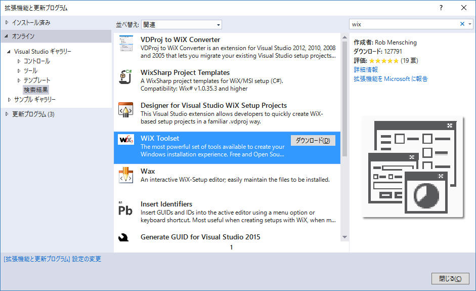
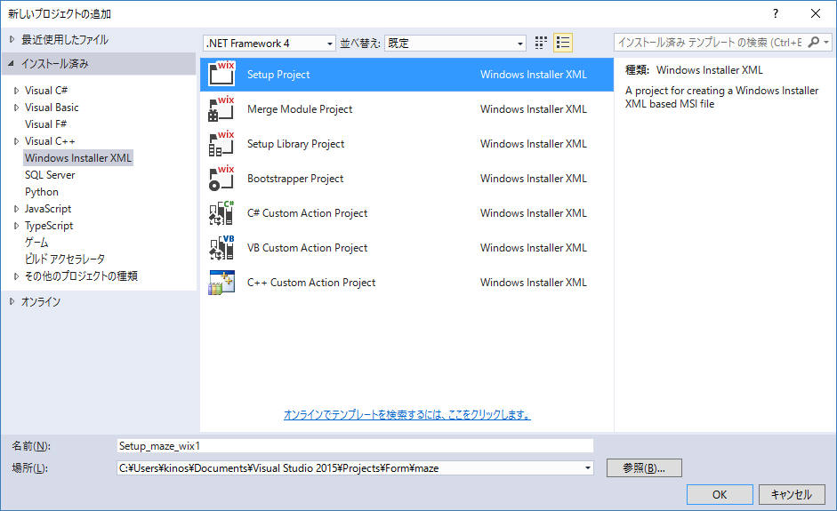
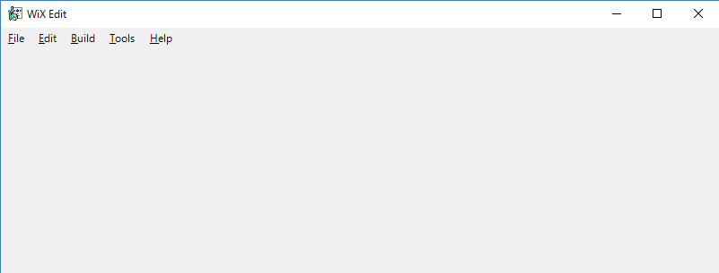
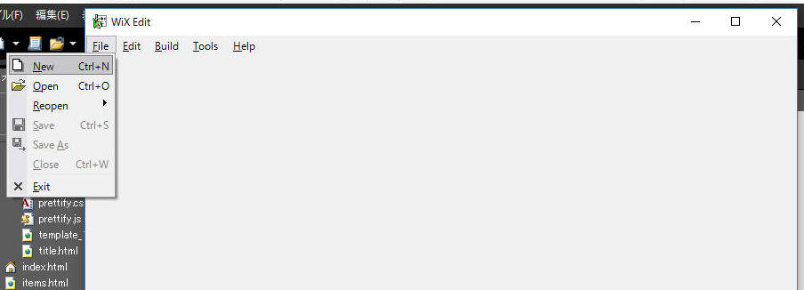
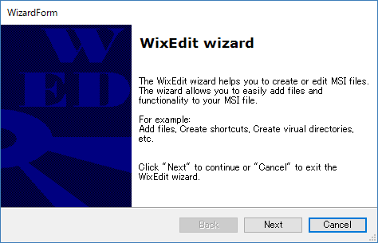
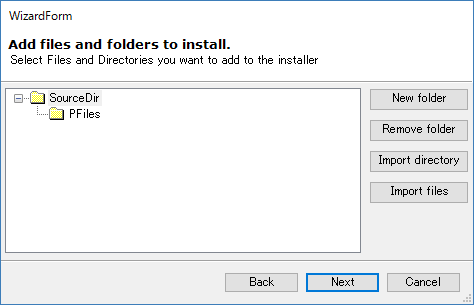
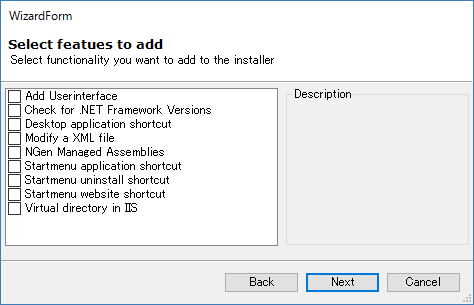
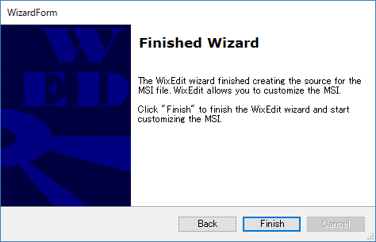
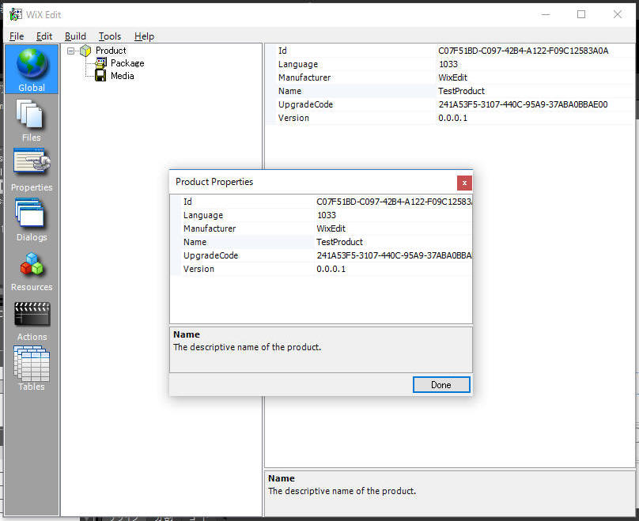

WiXプロジェクトを新規作成する手順を記載します。
1. 準備
2.
WiXプロジェクトを新規作成する
2-1. Visual Studio 「新規プロジェクトの追加」
2-2. WixEdit で新規プロジェクトを作成
参考
このホームページでは以下の環境を使用します。
(1) WiX Toolset
Visual Studio の「拡張機能と更新プログラム」から「WiX Toolset」を選ぶことでダウンロードできます。
この文章を記載時点で、バージョンは 3.10.3 です。

または下記URLから取得可能です。
https://visualstudiogallery.msdn.microsoft.com/b6868002-9770-4479-80a7-259de34df527?SRC=VSIDE
(2) WixEdit
以下のホームページから WixEdit を入手します。
http://wixedit.sourceforge.net/
Visual Studio の「新しいプロジェクトの追加」から「Setup Project」を選ぶことで、WiX プロジェクトを新規作成してみます。
下図に従って「Setup Project」を選択後、［OK］をクリックします。

生成された *.wxs ファイルは以下の通りです。
["Product.wxs"]
<?xml version="1.0" encoding="UTF-8"?>
<Wix xmlns="http://schemas.microsoft.com/wix/2006/wi">
<Product Id="*" Name="Setup_maze_wix1" Language="1033" Version="1.0.0.0" Manufacturer="" UpgradeCode="c97ab7e8-20bc-4563-a87e-51e174b02b1f">
<Package InstallerVersion="200" Compressed="yes" InstallScope="perMachine" />
<MajorUpgrade DowngradeErrorMessage="A newer version of [ProductName] is already installed." />
<MediaTemplate />
<Feature Id="ProductFeature" Title="Setup_maze_wix1" Level="1">
<ComponentGroupRef Id="ProductComponents" />
</Feature>
</Product>
<Fragment>
<Directory Id="TARGETDIR" Name="SourceDir">
<Directory Id="ProgramFilesFolder">
<Directory Id="INSTALLFOLDER" Name="Setup_maze_wix1" />
</Directory>
</Directory>
</Fragment>
<Fragment>
<ComponentGroup Id="ProductComponents" Directory="INSTALLFOLDER">
<!-- TODO: Remove the comments around this Component element and the ComponentRef below in order to add resources to this installer. -->
<!-- <Component Id="ProductComponent"> -->
<!-- TODO: Insert files, registry keys, and other resources here. -->
<!-- </Component> -->
</ComponentGroup>
</Fragment>
</Wix>
|
続いてWixEditを使って新規プロジェクトを作成してみます。
WixEditのウィザードで様々なことができますが、まずはデフォルト状態のプロジェクトを確認してみましょう。
WixEdit を起動します。

File → New を選択します。

［Next］をクリックします。


［Next］をクリックします。

［Finish］をクリックします。

下図のような画面を表示するので、［Done］をクリック。

以上の結果で生成された *.wxs ファイルは以下の通りです。
["Product.wxs"]
<?xml version="1.0" encoding="utf-8"?>
<Wix xmlns="http://schemas.microsoft.com/wix/2006/wi">
<Product Id="C07F51BD-C097-42B4-A122-F09C12583A0A" Name="TestProduct" Language="1033" Version="0.0.0.1" Manufacturer="WixEdit" UpgradeCode="241A53F5-3107-440C-95A9-37ABA0BBAE00">
<Package Description="Test file in a Product" Comments="Simple test" InstallerVersion="200" Compressed="yes" />
<Media Id="1" Cabinet="simple.cab" EmbedCab="yes" />
<Directory Id="TARGETDIR" Name="SourceDir">
<Directory Id="ProgramFilesFolder" Name="PFiles" />
</Directory>
<Feature Id="DefaultFeature" Title="Main Feature" Level="1">
</Feature>
<UI />
</Product>
</Wix>
|
記載： 2016年08月19日 木下英俊